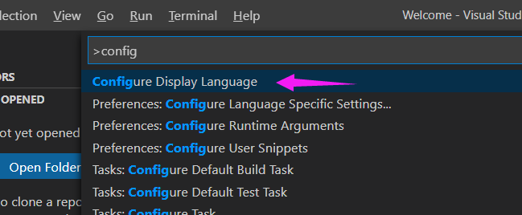
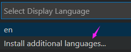
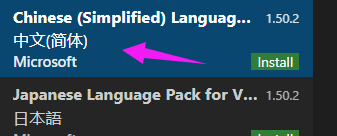
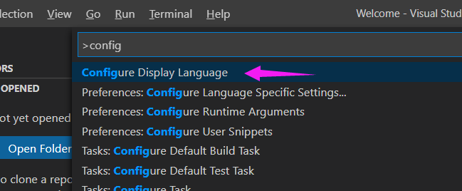
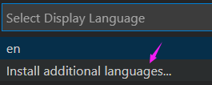
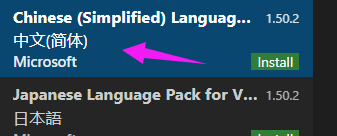

第一步
打开vscode，然后点击view选项卡下的第一个，或者是直接用快捷键Ctrl+Shift+P打开命令面板
然后输入Configure Display Language,点击第一个。

然后点击Install additional languages进行安装扩展语言

第二步
找到中文简体后点击Install绿色按钮进行安装

第三步
重启VScode即可看到中文界面
打开vscode，然后点击view选项卡下的第一个，或者是直接用快捷键Ctrl+Shift+P打开命令面板
然后输入Configure Display Language,点击第一个。

然后点击Install additional languages进行安装扩展语言

找到中文简体后点击Install绿色按钮进行安装

重启VScode即可看到中文界面